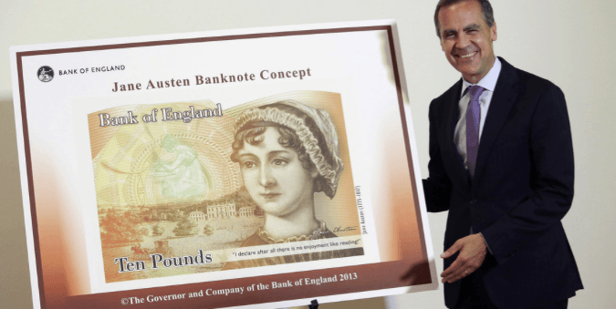

< < < Back
British Gender Huckster Receives Top Royal Honour For Complaining About Inequality – Return Of Kings
The abasement of standards in British public life has reached a new low, after Caroline Criado-Perez, a shrill, feminist tubthumper of no discerning talent other than screeching and wailing online, was awarded the Order of The British Empire.
The decision to award Criado-Perez the honour is a strange one, since the pinnacle of Criado-Perez’s achievement was to successfully campaign for the author Jane Austen to feature on a British banknote, the sort of token gesture which institutions like the Bank of England are keen to be seen making anyway.
What has Criado-Perez achieved that warrants putting her in the same box as established entrepreneurs, actors and inventors?
Caroline who?

Privately educated Criado-Perez, for overseas readers, is a Gawker-calibre churnalist who makes a living writing about asinine topics of interest to feminists: what hashtags have been used on Twitter, what nomenclature should apply to male feminists (are they feminists or are they “feminist allies”?), referring to the patriarchy as if it were an actual thing, and so on.
She is also a fervent supporter of the decidedly dodgy prosecution for rape of Julian Assange. Assange is being sought for extradition from the UK by the authorities in the Scandinavian territory of Sweden, a feminist banana state where the application of law and reason is known to have collapsed.
Criado-Perez, who has a Masters Degree in Gender from the London School of Economics, accepts the absurd regret-rape allegations against Assange uncritically.
Pictures of Charles Darwin damage the aspirations of women and young girls
But Criado-Perez’s crowning glory was to convince the Bank of England to print a picture of Jane Austen, the English novelist, on the English £10 note. The drive to have the Bank make the token gesture is set out in her own, man-hating words:
I spent much of my time rehearsing arguments about the damage a public culture saturated with white male faces does to the aspirations and achievements of women and young girls.
Criado-Perez’s gripe was with the “all-male line-up on banknotes.” Even ignoring the patent inanity of the campaign (all British banknotes bear the face of a very powerful woman, Queen Elizabeth II of the United Kingdom), the harpy-in-chief came in for an unusual level of sustained attack. One man even sent her a letter at home to show her he knew where she lived!
Bank of England governor Mark Carney, earning himself mad Hampstead dinner-party kudos points.
After the Bank of England capitulated to requests, putting Jane Austen on banknotes and offering a stream of mealy-mouthed platitudes about representing the “diversity” of society and complying with the “Public Sector Equality Duty”, our Caroline was subjected to a further “deluge of threats of sexual violence”.
Trolls started tweeting under various hashtags, like #rapecrew and #hopeyougetraped, offering such gems as:
You need a good smashing up the arse
and
So looking forward to titty-fucking you later tonight – I’ve got an invitation to your anus
The various internet abuse continued until Caroline, ever the strong, independent womyn, had a break-down. In her own words, she “broke down completely, utterly overwhelmed, starting to think that it was never going to end.”
The effect of these words on a screen upon her, was, in her words “dramatic.” “When it was at its height I struggled to eat, to sleep, to work,” she complained at the time.
Melody Hensley was attacked after saying her PTSD is on par with war veterans
Just like Melody Hensley, the SJW who claims the internet gave her PTSD, Criado-Perez is a embodiment of the soppy, weak-willed millennial. For all her education at Oxford and the London School of Economics, she is unable to grasp the simple logical proposition that turning off a computer prevents other people being nasty to you on the internet.
Your rights end where my feelings begin
What Criado-Perez has managed to do, and will perhaps be a greater “achievement” than her lunatic scheme to put Jane Austen on the £10, was to promote the notion that having your feelings hurt on the internet is a matter for the police.
The common sense sense advice offered when she was under a barrage of puerile, locker-room abuse was pooh-pooed by Criado Perez. She was indignant at being told “don’t feed the trolls.” The advice, she kvetched, “doesn’t magically scrub out the image in your head of being told you’ll be gang-raped till you die.”
No, the only way of dealing with the weak-mindedness of Criado Perez and her like, is for the long arm of the law to get involved and police online communication!
Furthermore, in a Britain where the police is under stringent cost-cutting measures that is putting strain on the front line, special snowflake Criado-Perez indignantly demands that “if the police don’t have the resources to deal with these crimes, they need to be given them”.
When privileged white women manipulate the legal system, simple people go to jail.
Our Caroline got her wish. On 24 January 2014, Isabella Sorley, 23, of Newcastle-upon-Tyne, was sentenced to 12 weeks in prison and John Nimmo, 25, of South Shields, was jailed for eight weeks after pleading guilty at Westminster Magistrates’ Court to the Orwellian-sounding offence of “improper use of a communications network”.
Victim impact statements are a classical ploy used by British prosecutors to shoe-horn “evidence” into court that would not stand the light of day under the proper rules concerning witness statements. It is worth reading this extract from the victim impact statement of Caroline Criado-Perez, the strong, empowered, independent, go-grrl feminist. The melodrama alone is enough to make one weep for Jesus.
It’s hard to get my thoughts together at the moment as my stomach is churning – hearing the outcome has made me realise how tense and anxious I have been feeling. But here goes.
I did not attend the sentencing as I didn’t feel I could cope with being in court with them – and I didn’t feel sure that the judge would understand how terrifying and scarring the whole experience has been for me, which again is not something I could face.
I feel immensely relieved that the judge clearly has understood the severity of the impact this abuse has had on me.
The real legacy of Caroline Criado-Perez
Appointment as Officer of the Order of the British Empire (OBE) is awarded for “having a major local role in any activity, including people whose work has made them known nationally in their chosen area.”
This is a convenient vessel for the Conservative government to kow-tow to the haute-chattering classes by awarding a gender huckster du jour, Caroline Criado-Perez, a trinket to hang on her mantlepiece. It makes David Cameron trendy and hip, and it makes the British Establishment look full of empathy.
Criado-Perez is the walking archetype of shameless privilege. Her father is the former boss of UK supermarket chain Safeway. Like flotsam, she has drifted from half-baked pursuit to half-baked pursuit, dabbling in opera singing and digital marketing before studying at Oxford as a mature student, all done at a leisurely pace and probably with lots of cash injections from mummy and daddy.
Her lasting legacy will not be the banknote with Jane Austen on it. Rather it will be the day that she invoked the power of the state to make a court imprison two simple, working class folk for hurting her feelings on the internet.
She did this in the same cowardly manner she conducts her entire life, that is, remotely—over the internet, over the phone, from the comfort of her armchair. Criado-Perez did not even have the stomach to come to court, as two people whose lives were the diametric opposite of her own pampered upbringing, were taken down to gaol.
Beyond this, she added to the precedent in the UK courts whereby an agent of the state, a judge, will deprive men of their liberty for putting words on a screen that hurt the feelings of a “celebrity.” Words that anyone with any common sense knows can be banished to the ether by switching off or pressing the block button.
For hammering another final, fateful nail into the coffin of the free speech and common sense in Britain, we salute you, Caroline Criado-Perez, Officer of the British Empire.
Read More: Special Snowflake Lashes Out At Oxford University For Not Accommodating Her Made-Up Disabilities


{kind=link}
{kind=link}
{kind=link}